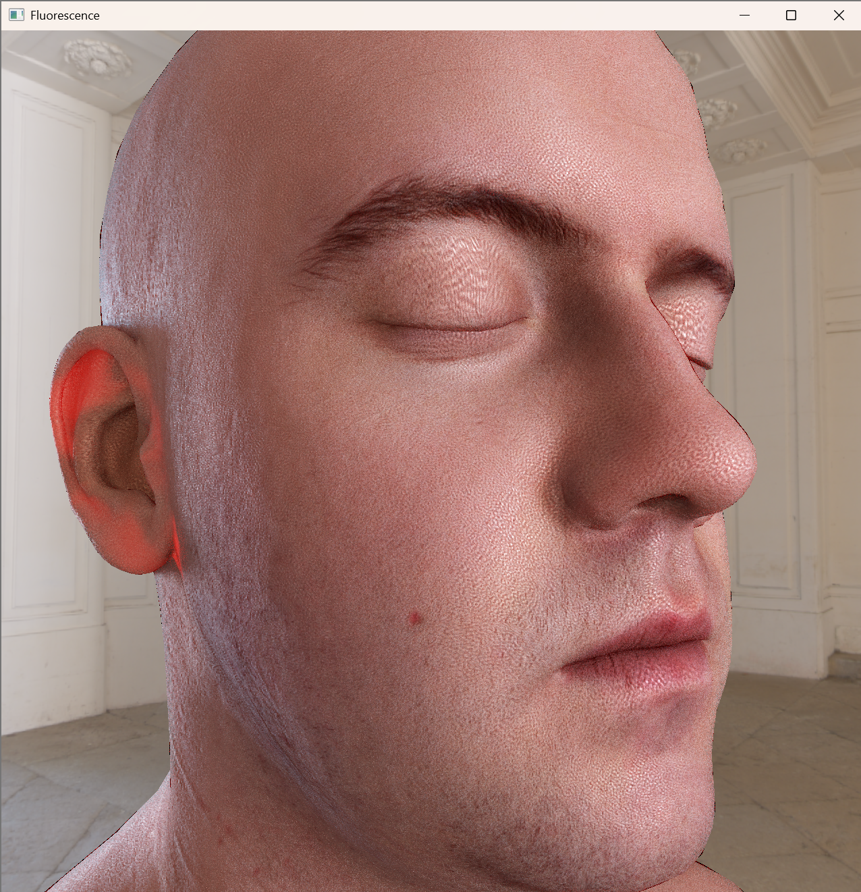
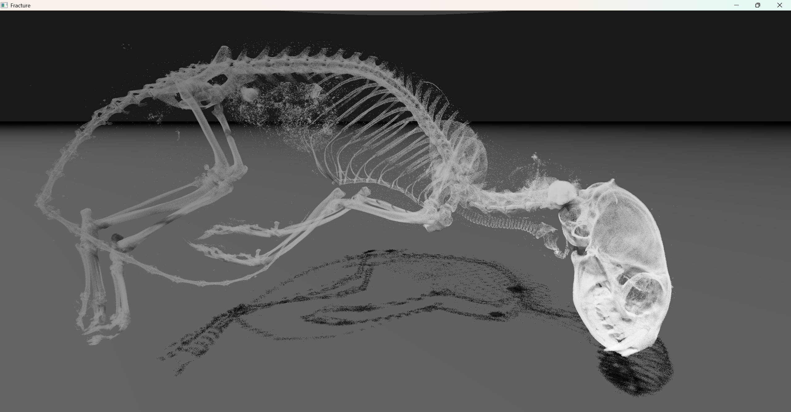

Gallery


.jpg)
.jpg)


Projects and Experiments
Skin Rendering Experiments
- Screen-space techniques to approximate subsurface scattering, shadows, and translucency
- Two-layered skin BRDF with adjustable diffusion profile
- Procedural generator for high-frequency spec map


Fracture: CT Scan Renderer
- CT Scan parsing and streaming
- Custom compact voxel format
- Simple volumetric rendering, direct lighting with shadows


Restir DI
- Simple implementation of spatial and temporal light resampling based on Restir DI
Pies: Soft Body Solver
- Projective Dynamics solver implementation
- Spatial hash broadphase and cubic-rootfinding CCD narrowphase
- Experimental incremental potential contact (IPC) implementation
- Various constraint implementations - tetrahedral-strain, distance, bending, friction, and collisions
- Integration into Maya as an authoring tool plugin
Fractal Fluids
- Grid-based 2D fluid simulation and fractal renderer
Smoke Simulation and Rendering
- Grid-based fluid simulation and volumetric rendering
GPU Collision Detection with One Million Particles
- Fast GPU spatial hashing implementation for collision detection
- Parallelized Jacobi iterations to resolve collisions
Cloth Self-Collision
- KD Tree broadphase implementation
- Conjugate gradient descent solver - distance and collision constraints